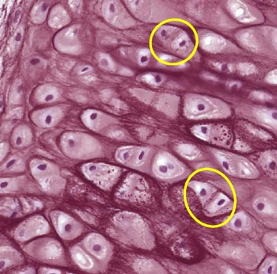

b. Elastisch kraakbeen
De opbouw van elastisch kraakbeen is te vergelijken met hyalien kraakbeen. Elastisch kraakbeen bevat naast collageen type II vezels echter ook veel elastische vezels. Deze elastische vezels kunnen wél zichtbaar gemaakt worden onder een lichtmicroscoop. Met een specifieke kleuring, bijvoorbeeld orceïne, zien we elastinevezels kriskras verspreid in de matrix.
Elastisch kraakbeen is een stevig maar elastisch en buigzaam kraakbeen. Het komt onder meer voor in de oorschelp en het strottenklepje.
De opbouw van elastisch kraakbeen is te vergelijken met hyalien kraakbeen. Elastisch kraakbeen bevat naast collageen type II vezels echter ook veel elastische vezels. Deze elastische vezels kunnen wél zichtbaar gemaakt worden onder een lichtmicroscoop. Met een specifieke kleuring, bijvoorbeeld orceïne, zien we elastinevezels kriskras verspreid in de matrix.
Elastisch kraakbeen is een stevig maar elastisch en buigzaam kraakbeen. Het komt onder meer voor in de oorschelp en het strottenklepje.

Bij elastisch kraakbeen liggen de chondrocyten ook in isogene groepen (oranje omcirkeld). In de matrix zie je echter bij specifieke elastinekleuring (hier bijvoorbeeld orceïne) de elastische vezels (roestbruin) in de matrix.
Vordering zelfstudie kraakbeen: